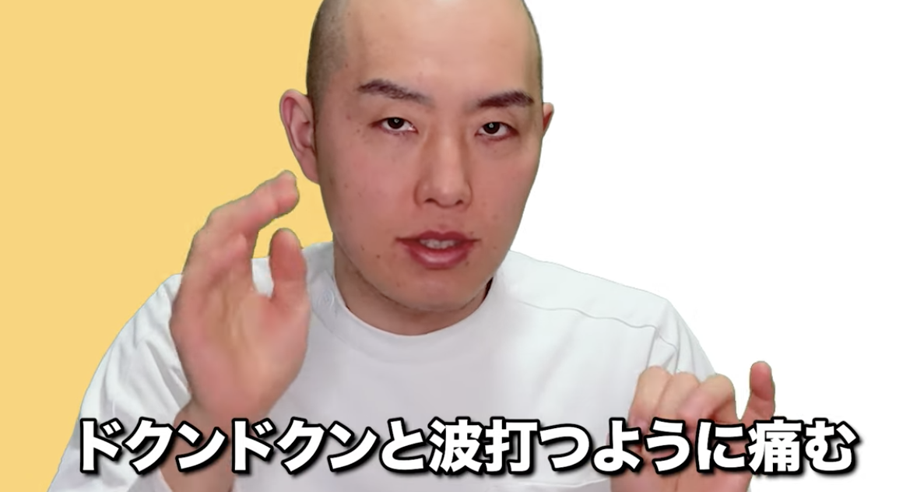
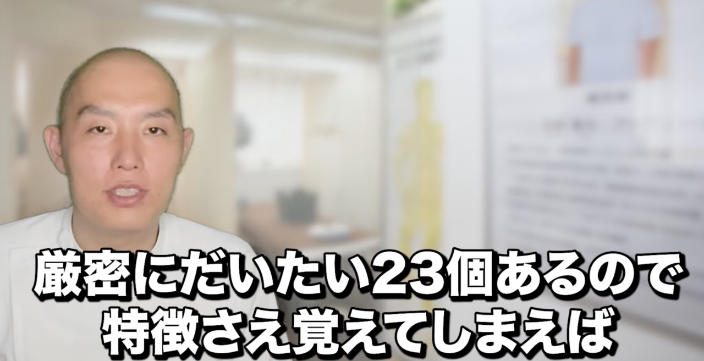
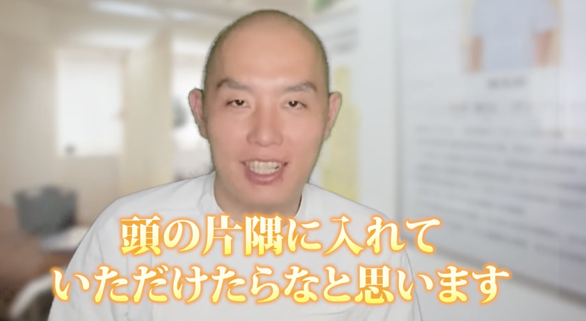
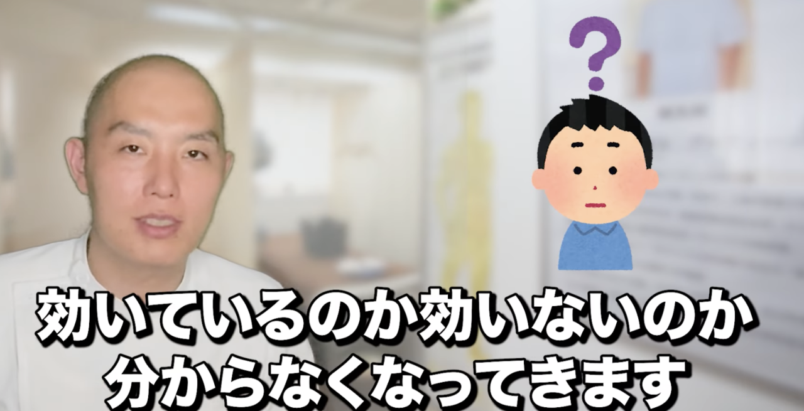
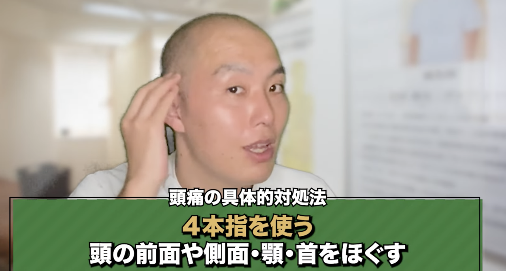
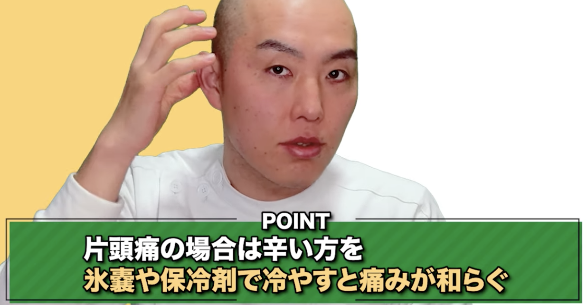

片頭痛の鍼灸
脈打つ強い痛みや光・音への過敏を伴う片頭痛に対し、首肩の深層筋と自律神経を整えて発作頻度と負担の軽減を目指します。
院長YouTube解説・関連動画
片頭痛では、発作的に強い頭痛が現れ、数時間から2～3日続く

片頭痛では、発作的に強い頭痛が現れ、数時間から2～3日続きます。痛みの程度は、中程度から非常に激しい程度まで人によって様々です。
片頭痛はいくつかの段階を経て進行することがあり、多くの場合は頭痛より先に目がチカチカして光が見えるなどの症状が現れ、頭痛がおさまった後も数時間から1日程度体がだるく感じたり、普段と異なる感覚に襲われることがあります。
頭痛の症状がある時、体を動かして頭の位置を変えてしまうと痛みがさらに強くなります。頭の位置を変えると痛みが強くなる症状は、頭痛の中でも片頭痛特有の症状です。
・吐き気と嘔吐
片頭痛の際には、吐き気が生じることが多く、場合によっては嘔吐することもあります。
・感覚過敏
光、音、匂いに対する過敏が伴うことがあります。
・視覚障害
光のちらつきや視野の一部が見えなくなる視覚障害が起こることがあります。
・めまい
片頭痛の際にはめまいを感じることもあります。
・気分変化
片頭痛が始まる前に気分が落ち込んだり、興奮したりすることがあります。
・疲労感
片頭痛の前後には一般的に疲労感を感じることがあります。
・集中困難
片頭痛発作中は集中することが困難になることがあります。
・頭痛の前にチカチカした光が見える
・物がダブって見える
・胃の気持ち悪さや空腹感、食欲不振
・眠気やむくみ
・気分の変化
・首のこわばり
２３種類の頭痛

頭痛といえば、緊張性頭痛（筋肉や精神的な要因の頭痛）や片頭痛、群発性頭痛しか知らない人が多いです。しかし、これは仕方のないことで頭痛が起こって病院に行っても薬を処方されて終わることが多いため病院でもあまり詳しい説明はしてくれないからです。
鍼灸院では病院に行った後に来る人が非常に多いため、色々な頭痛を拝見することがあり、頭痛には大体２３種類あります。

1.筋緊張性頭痛
緊張型頭痛ともいいます。
特徴・・・頭全体で締め付けられる頭痛
原因・・・ストレス、緊張、不安、姿勢の悪さ
頭の横についている筋肉や顎の筋肉、首の筋肉からくることが多く、鍼灸院でも見ることの多い頭痛です。
2.片頭痛
特徴・・・一側性の激しい拍動性の痛み
片頭痛では、吐き気、嘔吐光や音に対する感受性が上がります。
よく閃輝暗点という目の前がキラキラしたりぼやける状態が急に起きる人は片頭痛になりやすいです。
原因・・・遺伝性、環境要因、ホルモンの変化、特定の食べ物、飲み物
コーヒーやチョコレートなどの血管を広げるような食べ物はなりやすいと言われています。
片側だけ痛くてバファリンを飲んでいる人も多く、よく見られる頭痛です。
耳鳴りと偏頭痛が連動している人も多く、耳鳴りの３割程度の人は頭痛連動型です。頭痛連動型は、頭痛が改善しないと耳鳴りも改善しないという特徴もあります。
3.群発性頭痛
特徴・・・片側の目の周りに非常に強い痛みが発作的に現れる
原因・・・正確なところはわかっておらず、季節性、アルコールなどが引き金になると考えられている
自殺頭痛とも呼ばれており、改善する人としない人がはっきり分かれる頭痛です。当院で拝見したケースは、全員男性で年２〜3回というように単発で起きる頭痛です。一定期間我慢すれば落ち着くことを本人がわかっているため鍼灸によって発作が落ち着いているのか落ち着いていないのかが判断しずらい症状です。
4.副鼻腔炎による頭痛
特徴・・・顔の前側や鼻周りの痛み、鼻詰まり鼻水を伴ってしまうこと
原因・・・副鼻腔炎の感染、炎症
5.薬物乱用性頭痛
鎮痛剤の過剰使用によって引き起こされる頭痛で国際頭痛学会でも問題視されています。
特徴・・・脳が薬の効果を欲するために痛みを出して鎮痛剤を飲まないとおさまらなくなること
原因・・・鎮痛剤の乱用
1番の問題は最初に起こった頭痛は改善していますが、薬を飲まないと頭痛がおさまらない状態になることです。
6.高血圧頭痛
特徴・・・朝に最も痛みが強く徐々に落ち着いてくる頭痛で、重症の高血圧の人に多い
原因・・・寝起きの血圧の高さ
7.早朝頭痛
特徴・・・起床時に起こる頭痛
原因・・・偏頭痛、睡眠時無呼吸症候群、脳震盪
8.かき氷頭痛
特徴・・・冷たいたべものや飲み物を摂取した時のみに起こる一過性の頭痛
原因・・・冷たい食べ物や飲み物による喉の血管の収縮と拡張
かき氷頭痛はいまだに原因不明で、喉の近くを通る三叉神経、舌咽神経が冷やされて痛みが出るという説もあります。
足湯をしながらかき氷を食べることで出にくくなります。
9.生理的偏頭痛
特徴・・・月経周期に関連する偏頭痛
原因・・・エストロゲンの急激な低下
10.オルガズム頭痛
特徴・・・性行為中に発生する頭痛
原因・・・性的活動による急激な血圧変化
11.気圧頭痛
特徴・・・食事をしたり血糖値が低下したときに起こる頭痛
原因・・・低血糖と筋の緊張
12.二日酔いの頭痛
特徴・・・アルコール摂取時のズキズキとした痛みと吐き気
原因・・・アルコールによる血管拡張と炎症
13.感染症による頭痛
特徴・・・感染症の伴う全体的な頭痛と発熱
原因・・・ウイルス性、最近感染
コロナ後遺症でも多い頭痛ですが、ブレインフォグといい頭がぼーっとする、頭が締め付けられる、目の奥が痛いなどの症状があり、片頭痛や筋緊張性頭痛に間違えられやすい頭痛です。
14.変性偏頭痛
特徴・・・片頭痛の片側の体の麻痺や感覚異常を伴う
原因・・・遺伝的要因
15.巨大細胞性動脈炎
特徴・・・側頭動脈の炎症による焼けるような痛み
原因・・・血管の炎症
16.発熱性頭痛
特徴・・・発熱とともに生じる全体的な頭痛
原因・・・感染症による血管の張り
17.脳震盪性頭痛
特徴・・・頭部の外傷後に持続する頭痛
原因・・・脳や頭の外傷
鍼灸院には非常に多い頭痛で、車の事故の後やぶつけた後に起こります。薬を飲んできかずに鍼灸院に来る人が多いです。ぶつけたときに筋肉が硬くなってしまい硬さが取れずに起こる頭痛です。
18.姿勢性頭痛
特徴・・・特定の姿勢や動きに対して発生する頭痛
原因・・・脳性髄液の露出
脳脊髄減少症にも多いです。
19.脳腫瘍による頭痛
特徴・・・進行性で慢性的な頭痛
原因・・・脳腫瘍
20.髄膜炎による頭痛
特徴・・・激しい頭痛、吐き気、硬直した首
原因・・・脳や脊髄の膜の炎症
ウイルス感染に似ていてウイルス性髄膜炎によく見られる。
21.飛行機頭痛
特徴・・・飛行中や離陸直後に感じる頭痛で急な気圧変化によって起こる
原因・・・気圧の変化による副鼻腔や中耳の圧力変動
鼻詰まりがひどいと鼻の中の空気が膨張して鼻の神経を刺激するため非常に痛いです。対策法は、飛行機が離陸する前に鼻詰まりや耳通りをよくすることです。
22.脳内血管奇形による頭痛
特徴・・・脳内の血管奇形に伴う
原因・・・血管の異常
23.睡眠時無呼吸症候群による頭痛
特徴・・・朝起きたときに起こる頭痛
原因・・・睡眠時の呼吸停止や浅い呼吸

２３個の中で1番怖いのは薬物乱用性頭痛です。
薬がやめられなくなり、本人も薬がきいているのかきいていないのかわからなくなるのです。薬はその時々できかせてあげてあまりいっぱい飲まないように気をつけましょう。
頭痛の簡単な対策法は頭の側面と顎をほぐすことです。
血管の周りにくっついている神経が興奮して起きる痛みや頭に行く神経が首で圧迫されて起こるケースがあるため、極端に痛みがひどくない人は、頭、顎、首をほぐしてあげることで改善します。
４本指で頭の前側や側面、顎、首をほぐしましょう。また、チョコレートやカフェインなどの血管が広がりやすいものを摂取すると頭痛は悪化しやすいため気をつけることも大事です。

中見出し

発作時には、片頭痛の痛みや関連症状を速やかに軽減することを目的に改善を行います。そのためには、非ステロイド性抗炎症薬やイブプロフェンやナプロキセンなどが使用されます。部屋を暗くして寝たり、コーヒーなどのカフェイン飲料を飲んだりすることもおすすめです。
片頭痛では、片頭痛の発作を予防したり頻度や強度を減らしたりすることを目的に改善を行うことも大事です。そのためには、ベータ遮断薬やカルシウムチャネル遮断薬、ベラパミルなどの薬が使われます。
片頭痛の管理には、定期的な運動、ストレス管理、規則正しい睡眠、バランスの良い食事など、生活習慣の改善も重要です。
他にも、鍼灸やマグネシウムやリボフラビンなどのサプリメントの摂取アロマセラピーなども一部では有効な改善方法として利用されています。
頭痛が続いて辛い場合は、頭痛外来や脳神経外科など専門の医師に相談に行くことをお勧めします。
【発作時の薬】
・トリプタン類
セロトニン1Bおよび1D受容体アゴニストとして作用し、炎症を引き起こすペプチドの放出を抑制し、脳の血管を収縮させることで痛みを軽減します。
代表的な薬剤: サマトリプタン、リゾトリプタン、ゾルミトリプタンなど。
・非ステロイド性抗炎症薬
プロスタグランジンの合成を阻害し、炎症と痛みを抑えます。
代表的な薬剤: イブプロフェン、ナプロキセン、ディクロフェナクなど。
・抗吐剤
吐き気と嘔吐を抑えることで、片頭痛に伴う不快感を軽減します。
代表的な薬剤: メトクロプラミド、プロクロルペラジンなど。
【予防薬】
・ベータ遮断薬
血圧を下げることに加え、脳内のセロトニン作用を調整して片頭痛の発生を予防します。
代表的な薬剤: プロプラノロール、メトプロロールなど。
・抗うつ薬
神経伝達物質のバランスを調整し、痛みの閾値を上げることで片頭痛の予防に効果を示します。
代表的な薬剤: アミトリプチリン（三環系抗うつ薬）、ベンラファキシン（SNRI）など。
・抗てんかん薬
神経細胞の興奮性を抑えることで片頭痛の予防に寄与します。
代表的な薬剤: トピラマート、バルプロ酸など。
片頭痛の新薬エムガルディについて
エムガルディという片頭痛の新薬があります。エムガルディは片頭痛は起こっていても痛みとして伝達されないようにする薬です。痛みを感じさせないようにするのです。1回の費用は45,165円です。保険適用のため3割負担で13,550円です。
1ヶ月に1回皮下注射します。初回のみ2本で2回目以降は毎月1本で良いです。費用はかさみますが長年片頭痛で悩んでいる場合十分に助けになるはずです。
エムガルディは片頭痛を根本的に完全させるものではありません。痛みは感じさせないようにしてくれますがこの片頭痛を引き起こす脳過敏は改善されません。脳過敏が放置されると脳は次第に少しの刺激でも興奮しやすくなり慢性的な興奮状態に陥ります。
耳鳴りと似ているのです。そして慢性的な興奮に陥ると脳の働きに混乱が生じ、頭痛、耳鳴り、浮動性めまい、不眠、自律神経失調症などが現れます。最終的に慢性頭痛が続くようになってしまいます。
エムガルディは非常に効果は高い薬ですが根本的な改善にはならないのです。片頭痛は原因となる物質がわかっています。セロトニンという物質です。エムガルディはセロトニンを狙い撃ちして痛みを抑える薬のため、片頭痛にしか効かない頭痛薬です。
片頭痛を改善するためには脳過敏のアプローチが必要です。大抵の人は抗てんかん薬や抗うつ剤を処方されて終わりますが、鍼灸では脳過敏を落ち着かせることができます。
セルフケアもおすすめです。セルフケアでは爪もみがおすすめです。親指の生え際をぐりぐりしましょう。
🎥 他のYouTube切り抜き・解説を読む（あと1件）▼
体のずれを整える方法
体は生活スタイルに合わせて歪んできます。例えば、デスクワークが多い人は前傾姿勢になります。前傾姿勢の人は非常に多いです。
前傾姿勢になると顔は前にいき、肩甲骨は外に開いて猫背になります。人間には、前傾姿勢になる時間が長いと戻りにくくなるという特徴があるため、前傾姿勢以前の体に戻さなければ症状として体に現れてしまいます。
両手を首に合わせて下に下げながら天井を見るセルフケアを３０秒行うことで首、喉、顎の隙間を開けることができます。朝昼晩の1日3回行いましょう。
両手を肩に置いてゆっくり回すことを朝昼晩の1日3回行いましょう。
背中の内側に力を入れることで肩甲骨が内側に入りやすくなります。また、肩甲骨の間に力を入れると胸の筋肉が緩まることにつながります。
100円アイテムで頭痛やストレス、脳の疲れが変わる
100円均一で買える商品で脳過敏に対するアプローチができます。お勧めの商品は枕型アイスパックです。
アイスパックで頭を冷やしてほしいのです。体は体温調節を脳の視床下部で行っています。熱がこもると脳の働きが低下し、集中力が下がったり頭痛が起きやすくなったりします。頭を冷やすことで体全体をリセットできます。
偏頭痛や緊張型頭痛にも効果があります。偏頭痛は脳の血管が拡張しすぎて炎症が起こる状態です。そのため冷やすことで血管が縮むため痛みが和らぎます。緊張性頭痛は首や後頭部の筋肉が効果し血流が悪化することで起こるため、冷やすことで炎症や頭痛が鎮静化します。
耳鳴りや脳過敏も頭を冷やすことで改善する可能性があります。これらの症状は脳の感覚処理が過剰になっている状態で交感神経の興奮や血流異常が深く関わっています。そのため頭を冷やすことで過剰な神経興奮を鎮めることができるのです。簡単に言えば脳のオーバーヒートを冷ますイメージです。耳鳴りの不快感や頭がガンガンする感じも和らぎます。当院でも耳鳴りや不眠の人の頭を冷やすことがあります。
東洋医学には頭寒足熱という言葉があります。頭は冷たく足は暖かい状態が健康の基本なのです。頭に熱がこもると気が逆上してイライラや不眠、頭痛、耳鳴りの原因になります。現代ではスマホやパソコンなどで脳がフル回転しっぱなしの状態に起こりやすいです。頭を冷やすことで東洋医学的にも気の流れを整えることができるのです。
前庭性片頭痛について
前庭性片頭痛とは、偏頭痛に伴う目眩や平衡感覚の異常を特徴とする病気です。このタイプの片頭痛は頭痛を伴わないことも多くめまいが主症状になることが多いです。
前庭性片頭痛は気象病ともいいます。低気圧がくると頭痛がしたり調子が悪くなるという人は多いですが、前庭性片頭痛の方が多いです。
1.めまい
数分〜数時間または数日続く。
2.バランス障害
不安定感、平衡感覚の喪失。ふわふわグラグラすることが多い。
3.感覚過敏
光、音、匂いに対する敏感さが増す。
4.頭痛
片側の激しい頭痛を伴う。（絶対ではない）
5.気圧の変動による体調不良
雨の日の前日〜前々日から体調が悪くなることが多い。
これらの症状は生活の質に大きく影響し日常生活の活動に支障をきたすことがあります。
具体的な原因は完全に改善されていませんが、片頭痛と同じように脳の痛み、前庭入力を調整する経路が関与していると言われています。一般的な片頭痛の原因は前庭性片頭痛の発作も引き起こすのです。
①ストレス
ストレスは体の緊張を及ぼし前庭性片頭痛につながります。
②睡眠不足
睡眠不足は自律神経失調症で起こります。
③特定の食品の摂取
チョコレート、熟成チーじ、赤ワインなどは片頭痛を起こしやすいです。
④ホルモンの変動
生理周期の閉経期に起こる女性ホルモンの変動が片頭痛につながります。
⑤気圧の変化
気圧の変化で片頭痛が起こることは、内耳に問題があります。耳の中にある内耳は水で満たされており、気圧が近づくと内耳内の期待が膨張して圧力が変化します。この内耳の変動を前庭神経が察知して脳に伝達されることによって片頭痛が起こります。気圧が問題というよりは耳の中が問題なのです。
前庭性片頭痛であるという判断は他の内耳疾患、神経疾患を除外することでおこなわれます。消去法で判断されることが多いのです。
前庭性片頭痛ではない症状①
突発的なめまい発作が5回異常発生して半数異常が片頭痛症状を伴うこと。
前庭性片頭痛ではない症状②
めまい発作が5分〜72時間続くこと。
（他の原因である良性発作頭位めまい症やメニエール病、脳卒中などの原因がない場合）
主な改善方法に関しては予防的方法と発作時の対処に分かれます。
予防的方法・・・抗てんかん薬、抗うつ薬、ベーターブロッカーカルシウムチャンネルブロッカー
発作時の対処法・・・トリプタン系の薬、非ステロイド抗炎症剤、吐き気止め
①高い有病率
前庭性片頭痛は成人の3%に影響を与えおり、女性に多いです。
男性に比べて女性が５倍以上の確率で発症しやすいとされています。
②歴史的な背景
前庭性片頭痛の判断の基準が確立されたのは2012年です。この病気は新しい概念で、それ以前は偏頭痛関連目眩や原因不明の目眩として判断されていました。最近では東京女子医科大学の清水俊彦先生が脳過敏症を提唱され、片頭痛がなかなか改善しない人が耳鳴りや頭鳴り、めまいを発症するのは脳過敏症であるという見方も提案してくれています。
③多様な要因
④判断の難しさ
ストレスや睡眠不足、ホルモンの変動、チョコレートや熟成チーズや赤ワイン、気圧の変化など原因が人によって違うという特質性があるため判断が難しいです。めまいの症状が多岐にわたるため他の内耳疾患と重なることも多いです。
⑤改善方法の進展
頭痛が起こる前に予防したり発作時の薬の処方をしたりといったように状況によって薬自体も分かれていますが、生活習慣の改善やストレス管理を提唱している医師が多いです。
⑥依存症の多さ
運動障害や言語障害、不安やストレス、パニック障害、抑うつ症状を経験することが多いです。これらの症状には、異なるアプローチが必要です。
国際頭痛学会の提唱している薬物乱用性頭痛といい、頭痛に対する薬を飲むことによって薬の依存症になってしまい薬を飲まないと頭痛が起きてしまうという恐ろしい状況になることもあります。
片頭痛だけなのか前庭性片頭痛なのか、薬物乱用性片頭痛を一緒に発症していないか、見極めが大事です。
前庭性片頭痛の場合、改善には内耳の循環の改善が不可欠です。内耳の循環を調整するには安定までの継続的なアプローチが必要です。
楽になったと思っていても持続的に刺激を与えて、体に良い状態を固定化させる必要があるのです。前庭性片頭痛の人は生まれつきの人が多く、内耳の循環の悪さが原因の場合が多いです。
耳の周りの軟骨周辺で口を開け閉めして
凹むところに貼りましょう。
聴宮にピップエレキバンを貼って欲しいです。耳の前側に軟骨があり、軟骨のところに口を開けると凹むところがあります。この凹むところにピップエレキバンをずっと貼っていてください。
お風呂に入った時に外れてしまうかもしれないですがそういう時以外は貼り続けて内耳の血液循環を改善してほしいと思います。
ピップエレキバンは血管の壁に備わっている細胞を刺激して血管の拡張させる一酸化窒素を多く作り出してくれます。それによって血管が開いて血液循環が良くなるというアプローチのため、ずっとピップエレキバンを貼ることで内耳周辺の血液循環をよくするのです。それによって水分代謝が活性化され耳の内耳の循環改善につながり、前庭性片頭痛（気象病）が落ちつきます。
顔のため目立ちやすいですが前庭性片頭痛の人には非常に効果があるためお勧めです。片頭痛と前庭性片頭痛、筋緊張性頭痛、薬物乱用性頭痛、群発性頭痛、脳過敏症候群による頭痛にはそれぞれ特徴があります。
上記のアプローチは前庭性片頭痛単体で効果を発揮する方法です。１度試してみて天気が悪くても症状があまり悪くならない場合は安定させるために貼り続けてほしいです。効果がある人には非常に効果的なため、諦めずに行ってほしいと思います。
耳鳴り頭鳴りと頭痛の関連性
当院の対応する方の中でも、耳鳴り頭鳴りの人が1番多いです。耳鳴りで悩んでいる人にいろいろ話を聞くと、頭痛と連動している人がいます。
医師たちの間でも頭痛と耳鳴りの関連性について議論されていて論文もあります。この研究では耳鳴りで初めて病院に行った人を対象に頭痛の併存頻度、耳鳴りと頭痛が連動する症状の頻度、頭痛の有無、耳鳴りの重症度との関係について研究しています。
耳鳴りの支障度を評価するためのH T Iと不安を評価するためのH A D Sを使って研究している論文で、１２６例の耳鳴りの人のうち、３８例（約３０%）の人が頭痛を感じるということがわかりました。その内１６例は耳鳴りと頭痛が連動していました。
耳鳴りで悩んでいる人の内３０%が頭痛を一緒に併発しており、半数弱は頭痛と耳鳴りが連動していたのです。
頭痛の有無によって分けられたグループ間ではH T IとH A D Sのスコアに優位な差は認められませんでしたが、耳鳴りと頭痛が連動する症例とそれ以外を比較した場合、前者のスコアが急に高くなりました。結果として耳鳴りを発症している人の中では頭痛が併存することが少なくないということがわかったのです。
さらに、耳鳴りと頭痛が連動する症例では耳鳴りの重症度が高くうつ病の状態の人が多いこともわかりました。そのため、耳鳴りの人には頭痛の併存を確認することが有効であるとされています。
耳鳴りの改善方法としては補聴器や教育的カウンセリングなどが推奨されていますが、うつ症状がある場合には抗うつ薬などの薬が推奨されています。なかなか改善しない人の場合は頭痛の改善が耳鳴りの改善にも有効な可能性もあります。
脳過敏症候群は片頭痛で悩む状態が長期化したり悪化することで起こる現象です。このことから脳過敏症候群と耳鳴り、頭痛がつながることがわかります。
慢性頭痛は一般的な症状で、片頭痛の年間発症率は8,4%と報告されており、片頭痛を発症している人の12%が耳鳴りを有しています。
頭痛の併存頻度や耳鳴りの重症度に影響を与えるかどうかは十分な結論は出ていませんが、頭痛の有無を確認し頭痛の改善を施術に追加することでより良い結果が得られる可能性があるのです。
当院でも頭鳴りと頭痛が連動している人はいらっしゃいます。頭痛がある場合は筋緊張性頭痛や群発性頭痛、片頭痛や三半規管の前庭神経炎を狙って施術をしますが、今まで耳鳴りとの連動に関してはいまいち説明ができませんでした。
ただ、この論文での３０%という頭痛と耳鳴りの併存の割合は当院でのパーセンテージと似ていることから従来の方法で改善されなかった耳鳴りの人に対して新たな施術を提供することができるかもしれないと考えることができました。
当院での耳鳴りの改善の施術のメインは血流問題と目からくる問題、後リンパ管の問題、筋肉や顎の筋肉です。耳鳴り、頭痛、脳過敏症候群の改善はセットで考えることが必要なのです。
当院でも改善するタイプと改善しないタイプの耳鳴りがあり、脳からくる耳鳴りの人には改善する施術を提供できない可能性もありますが、この論文から新しい観点での施術の提供を考えています。
鎮痛薬だけでは片頭痛の発作サイクルが止まりにくい理由
片頭痛は気圧変化・睡眠の乱れ・ホルモン変動・首肩の深層筋緊張などが引き金となり、三叉神経周囲で炎症物質（CGRP等）が放出されてズキズキとした拍動痛や光・音過敏を引き起こします。
発作を繰り返すほど脳が過敏になりやすいため、当院では発作時だけでなく「発作が起きにくい間隔」を作るために、後頭神経領域（風池・天柱）と自律神経の安定化を段階的に進めます。
なぜ鍼灸で改善へ向かうのか？（作用機序の図解）
片頭痛に対する鍼灸は、脳循環・三叉神経血管系と神経可塑性の調整機序を通じて、お体本来の回復力を引き出します。

百会・風池・合谷などの経穴刺激が三叉神経や大後頭神経・体性感覚路へ穏やかに作用します。
脳幹の自律神経中枢やセロトニン・GABA系のバランスを整え、神経の過敏発火を鎮めます。
後頭下筋群や首深部のこわばりを解き、頭部・内耳・顔面周囲の血流環境をサポートします。
神経回路の再学習（可塑性）と睡眠の質を高め、専門医の治療やリハビリの土台を支えます。
片頭痛に用いられる代表的なツボとセルフケア

📌 詳細データ・ツボ一覧表を開く▼
| ツボ名（経穴） | 位置の目安 | 主な狙い・役割 | セルフケアの注意点 |
|---|---|---|---|
| 百会（ひゃくえ） | 両耳上端を結ぶ線と正中線の交点 | 頭部循環・脳卒中後ケア・パーキンソン病の睡眠緩和 | 高血圧発作時・頭部外傷直後は避ける |
| 風池（ふうち） | 後頭部の生え際、僧帽筋外側のくぼみ | 片頭痛予防・後頸部筋緊張緩和・頭部血流改善 | 頸部動脈に近いため強いグリグリ押し厳禁 |
| 合谷（ごうこく） | 手の甲、親指と人差し指の骨が交わる手前 | 頭顔面部の要穴。片頭痛・顔面神経麻痺の遠隔調整 | 妊娠中は強い刺激を避ける |
| 翳風（えいふう） | 耳たぶの後ろ、乳様突起と下顎骨の間のくぼみ | 顔面神経出口近傍の循環改善・ベル麻痺ケア | 神経・血管が集中するため強圧を避け温め中心に |
| 陽陵泉（ようりょうせん） | 膝外側、腓骨頭の前下方のくぼみ | 脳卒中後の痙縮・パーキンソン病の筋固縮ケア | 腓骨神経近接のためしびれが出る強圧は回避 |
| 太衝（たいしょう） | 足の甲、親指と人差し指の骨が交わる手前 | ストレス性片頭痛・のぼせ・緊張緩和 | 妊娠中は刺激を避ける |
日常で心がけたいセルフケアと避けたいNG行動
✓ おすすめのセルフケア
- 発作の前兆や拍動痛が出たら、暗い静かな部屋でこめかみ〜首筋を冷やして休む
- 頭痛ダイアリーで誘因（気圧・睡眠・食事・月経周期）を把握する
- 平日と休日の起床時刻の差を2時間以内に保つ
✕ 悪化しやすいNG行動
- ズキズキ痛む片頭痛発作中に入浴・飲酒・強いマッサージで血流を急増させる
- 市販の鎮痛薬を月10日以上連用する（薬物乱用頭痛のリスク）
- 休日の寝だめや極端な空腹（低血糖）を繰り返す
査読論文が示す「脳神経領域の補完ケア（片頭痛予防・脳卒中後リハ・パーキンソン病睡眠・顔面神経麻痺）×鍼灸」の科学的エビデンス
国際的な医学データベース（PubMed・Cochrane等）で報告されている脳神経領域の補完ケア（片頭痛予防・脳卒中後リハ・パーキンソン病睡眠・顔面神経麻痺）領域の代表的な査読済み鍼灸研究です（標準治療との併用や研究上の限界を含めて掲載しています）。
📚 査読論文データ・出典表を開く▼
| 年・研究デザイン | 対象・規模 | 主な結果と臨床的意義 | 限界・出典 |
|---|---|---|---|
| 2016年 Cochraneレビュー | 反復性片頭痛 22 RCTs（n=4,985） | 無治療比で頻度半減41% vs 17%（RR 2.40）、予防薬比3か月57% vs 46%（RR 1.24）かつ副作用脱落OR 0.27と優位。 | 1年以上の長期検証は不足。 Cochrane (PMID: 27351677) |
| 2016年 Cochraneレビュー | 脳卒中後リハ 31 RCTs（n=2,257） | 通常リハ併用でBarthel Index（MD 9.19）・Fugl-Meyer（MD 6.16）・嚥下・疼痛改善を示唆、重篤な有害事象なし。 | GRADE低〜非常に低。標準リハビリの補完として位置づけ。 Cochrane (PMID: 27562656) |
| 2024年 シャム対照RCT | パーキンソン病の睡眠障害 78名解析 | 抗PD薬併用下でPDSS睡眠尺度が4週時+19.75点・8週時+20.24点とシャム比有意改善（P<0.001）。 | 単施設・小規模・8週間追跡。標準薬併用が前提。 JAMA Netw Open (PMID: 38922617) |
| 2013年 多施設RCT | ベル麻痺（顔面神経麻痺）338名（ステロイド併用） | 6か月時の顔面神経機能回復は得気手技群が対照鍼群より優位（調整OR 4.16）、QOLも改善。 | 全例プレドニゾン併用。急性期の過剰顔面通電は回避配慮。 CMAJ (PMID: 23439629) |
医療機関の受診を最優先すべきサイン（レッドフラッグ）
⚠ 専門医の受診・検査を最優先してください
脳卒中FASTサイン（顔のゆがみ・片腕の脱力・ろれつ困難は即119番）、雷鳴頭痛（突然の最悪の激痛）、発熱・項部硬直・意識障害やけいれん、急性顔面麻痺＋耳の強い痛みや水疱（ラムゼイ・ハント症候群は72時間以内の受診必須）がある場合は、直ちに救急・脳神経内科を受診してください。
参考文献・出典
- 銀座そうぜん鍼灸院「片頭痛の公式解説ページ」
- 2016年 Cochraneレビュー（反復性片頭痛 22 RCTs（n=4,985））— Cochrane (PMID: 27351677)
- 2016年 Cochraneレビュー（脳卒中後リハ 31 RCTs（n=2,257））— Cochrane (PMID: 27562656)
- 2024年 シャム対照RCT（パーキンソン病の睡眠障害 78名解析）— JAMA Netw Open (PMID: 38922617)
- 2013年 多施設RCT（ベル麻痺（顔面神経麻痺）338名（ステロイド併用））— CMAJ (PMID: 23439629)
よくある質問（FAQ）
Q. 片頭痛の発作が起きている時に温めてもよいですか？▼
Q. 病院の片頭痛薬（トリプタンやCGRP製剤）を使っていても鍼灸を受けられますか？▼
あわせて読まれる関連疾患（脳神経のお悩み）
頭を動かした瞬間の回転性めまいに対し、首肩の緊張緩和と内耳循環・自律神経調整、寝返り運動で再発予防を支援します。
末梢性顔面神経麻痺に対し、早期の医療機関受診を最優先としたうえで、顔面の血流促進と後遺症予防を支援します。
鎮痛薬の頻回使用で悪化する薬物乱用頭痛に対し、医師の減薬治療を軸に脳過敏と側頭筋緊張を和らげる鍼灸で支援します。
突然のパニック発作と予期不安に対し、専門医での標準治療を優先しつつ「腎気」や脳過敏・首肩の緊張から体の過剰性を整えます。
自分の体臭や口臭で周囲に迷惑をかけていると過度に悩み続ける状態。精神科・心療内科の専門治療を最優先に、安定期の緊張緩和を支えます。
幻覚や思考の著しい乱れを伴わず固定的な妄想が1か月以上続く精神疾患。精神科での専門治療を最優先に、安定期の不安・不眠ケアを支えます。
おひとりで悩まず、まずはご相談ください
銀座本院・川口・大宮・横浜・博多・田無の各院でご予約を承っております。